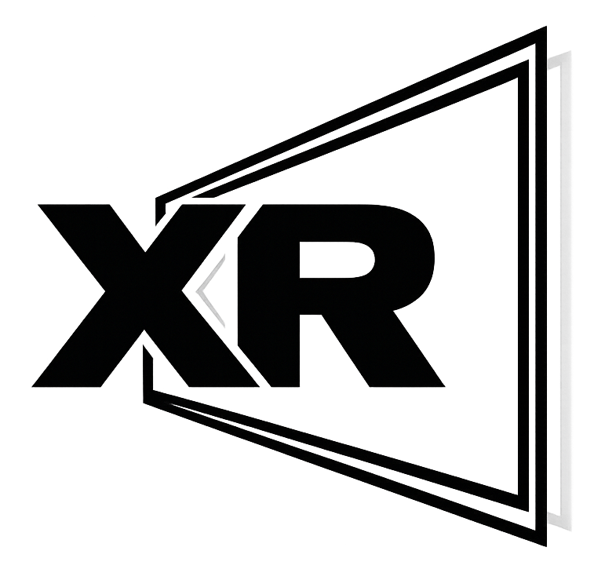

three.js Kooima 3D sample — reference implementation for WebXR on 3D displays. See DEVELOPER.md for an integration guide, PROTOCOL.md for the wire schema, and examples/minimal.html for a copy-paste starting point.